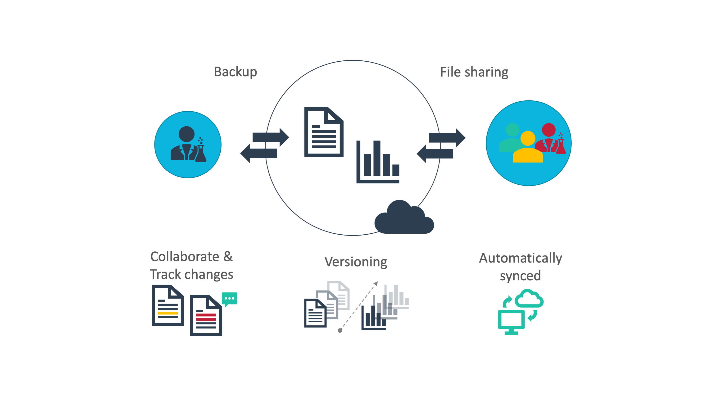

Version control & Git
last updated at 2022-05-09Science is highly iterative. Most outcomes along the data life cycle (between an initial idea and the final publication, see also RDM) are iterated through multiple cycles of design-test-repeat (e.g. laboratory experiments) or draft-review-publish (e.g. manuscripts) and mixes thereof. During these iterations multiple versions of the different outcomes are produced.
There are different options to keep track of these versions. The seemingly simplest option is to duplicate a file and rename it by attaching a version, e.g. manuscript.txt – manuscript_v2.txt – manuscript_final.txt. Although this may work acceptably for individual use it quickly becomes confusing when sharing with other researchers. Cloud services offer options to keep track of changes (what was changed and by whom) within collaborative, multi-party projects (see also Data Sharing). Here, versioning is usually taken care of automatically by the cloud service with little to no control by the user. However, these services are helpful only for version histories of typical office data (documents, presentations) or small datasets and within low-complexity projects.

A more sophisticated approach addressing the versioning needs in more complex projects originates from the field of software engineering. Software development builds on iterative design-test-repeat cycles, in which multiple versions of files (code, inputs and outputs) or directory structures emerge plus changing dependencies within (e.g. files) and outside (e.g. other software) of the project. So-called "distributed version control systems" (sometimes termed "source control" or "revision control") help software developers to keep track of project changes, guaranteeing stable integrity of the software, ideally before it is rolled-out to the public. The most prominent and vastly established distributed version control system is called Git.
By taking chronological snapshots of a complete project (termed "git repository") rather than single files, Git allows the user to "go back in time" to an earlier version of that project, e.g. when the software was properly functioning. This is further supported by options to make changes to multiple files at once in parallel, safe copies of the project (termed "branch" or "fork") without breaking the original version. In contrast to the versioning of cloud services, active control over these snapshots lies in the user's hand, allowing to evolve a project with a well-documented version history paralleling the iterative steps.

Although Git could be used locally as a standalone tool, its full power is unfolded via git platforms such as GitHub and GitLab. Similar to the typical cloud services for file sharing and collaboration, these platforms function as remote share-points for git repositories. They allow data access management (permission control) to share data privately with selected collaborators or the public. Individual contributions and changes by multiple collaborators can be tracked. On top of versioned data sharing, additional features, such as discussing and tracking project tasks and contributions, and wiki-based documentation render these git platforms very valuable for project and research (data) management. Consequently, they nowadays enjoy great popularity outside of software development.
Software developers collaborate via git to develop a software project over time, add new features, improve software parts or embed them into other software projects, and keep it up to date. Likewise, git suits to track the evolution of your plant science project over time, where analyses become more complex, build on top of each other or are embedded from other projects as more data from your own experiments or external resources is added. This is particularly the case, if experimental data is packaged in one git repository together with descriptive metadata, computations, analyses, and their outcomes as well as licenses for reuse.
Yes, although we spare the technical details here, Git at first glance is complex and there is quite the learning curve for those who really urge to understand the inner workings. However, the complexity is also part of its strength to capture the parallel, multi-party, multifaceted strings of scientifically iterative projects. And more importantly, there is a growing set of helper tools, GUI solutions and integrations into other tools to ease the work with git.
The following table gives an overview about DataPLANT tools and services related to sharing data. Follow the link in the first column for details.
| Name | Type | Tasks on data sharing |
|---|---|---|
| ARC Commander | Tool | Collect, structure and share:
|
| ARC (Annotated Research Context) |
Standard | Structure:
|
| DataHUB | Service | Share:
|
In order to use the DataHUB and other DataPLANT infrastructure and services, please sign up: with DataPLANT.